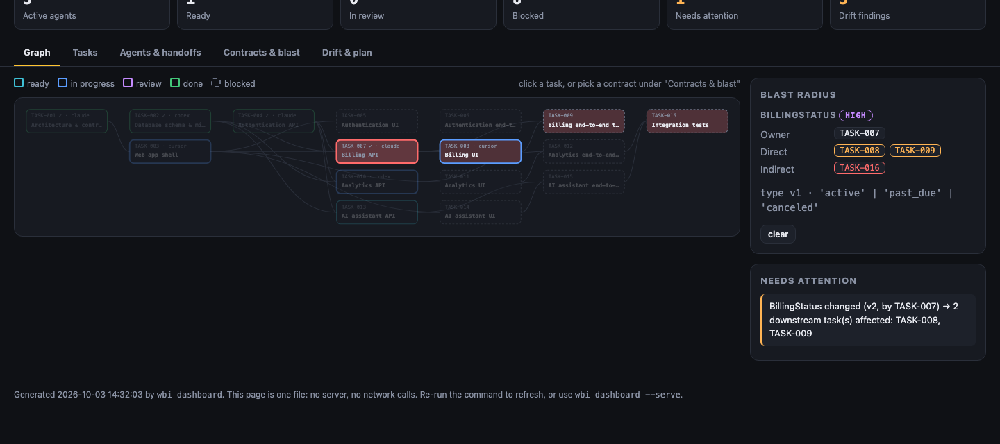

They collide
Two agents edit the same area. A merge conflict is the good outcome: the bad one is both being "right".
One repo. Humans. AI agents. Zero excuses.
The open-source coordination layer for AI-native engineering teams.
about 35 seconds · three commands · every output here is simulated
PRODUCTION INCIDENT
Something broke. Nobody knows who did it.
MayaDid you change payments?
SamNo.
MayaClaude changed it.
SamWhich Claude?
Let's find out.
$ wbi status
12 tasks · 4 agents · 2 blocked ⚠ TASK-003 PaymentStatus API CONTRACT CONFLICT
First, see what's happening across the repo.
$ wbi task TASK-003
TASK-003 Update PaymentStatus API Owner: Sam Executor: Claude Code Contract: PaymentStatus Downstream: TASK-010, TASK-014
Then see what the agent was actually supposed to do.
$ wbi blame src/api/payment.ts
PaymentStatus Changed by: Claude Code · TASK-003 · commit a91f2c7 ⚠ Undeclared: src/auth/payment-token.ts
simplified for the demo: real wbi blame <path> prints who changed a path, under which task and agent, from commit trailers. The "undeclared" line stands in for what wbi verify / wbi check report: files outside a task's allowed paths.
src/auth/payment-token.ts
There it is.
That's what Who Broke It? is for.
WBI connects what you're building, who is building it, why they're changing it, and what that change can break.
Two agents edit the same area. A merge conflict is the good outcome: the bad one is both being "right".
One agent bumps a type. Three other tasks, built against the old one, find out in CI. Or production.
The agent reports success. Nothing checks scope, contracts, rules, or whether anyone asked for this.
Six weeks later: why does this code exist, who wrote it, and which requirement was it for?
The repo carries its own engineering context. Any agent that can run a shell command can play. Five are proven end to end.
Goal → requirements → tasks → contracts → agents → commits → PRs, as plain files in your repo. This is a real plan, generated by wbi plan for a SaaS app. Click a task. Or break a contract.
Click a task to trace what it depends on (blue) and what depends on it (red). Break a contract to see its blast radius. We'll tell you who to apologise to.
Each agent works in its own isolated worktree on its own task branch. They declare intent before touching code, and wbi checks the declaration against everyone else.
wbi/TASK-007wbi/TASK-010wbi/TASK-003wbi/TASK-001wbi/TASK-002No server, no account. Teammates on separate machines share state through the git remote you already have. A push to a ref is an atomic compare-and-swap, so exactly one claim wins.
Signed batches · team allow-list · offline-tolerant · compaction · verified against real GitHub
"Done" is a claim. The Agent Judge checks it against scope, contracts, your constitution, tests and acceptance criteria. Risky changes (migrations, security, public API) wait for a human. Criteria only a person can sign are never attested by an agent.
wbi pr opens a PR whose body is built from the handoff. The GitHub Action then enforces the graph on the diff. These are the real findings from the public demo repo.
src/api/billing/steal.tssrc/web/shell/pay.tswbi dashboard writes one self-contained HTML file: no server, no network calls. Open it, commit it, host it anywhere static.

Open the live demo dashboard →Not simulated. Captured by scripts/site-data.py from real runs of the project's demo scripts on a throwaway repo, with the agents' coding scripted.
Open-source tools lie by omission. Here is the whole truth. (Full evidence and how to re-run it)
.git, missing attribution over MCP) that we fixed or documented.--force-with-lease compaction, and concurrent claim races with exactly one winner every time (17/17 checks on each host).curl, Homebrew and go install.curl -fsSL https://raw.githubusercontent.com/shriyashish-mishra/who-broke-it/main/install.sh | shVerifies the SHA-256 checksum and refuses to install on a mismatch.
brew install shriyashish-mishra/tap/wbigo install github.com/shriyashish-mishra/who-broke-it/cmd/wbi@latestNeeds Go 1.26+.
Download wbi_<version>_windows_amd64.zip from the latest release, unzip, and put wbi.exe on your PATH. Windows is covered by CI tests; the demo scripts are bash.
# in any git repo with one commit
wbi init
wbi plan "Build a SaaS dashboard with auth, billing and analytics"
wbi simulate --approve # waves, critical path, conflicts
git add .wbi && git commit -m "chore: engineering graph"
wbi adapters install claude # teach your agent the protocol
wbi status # mission control
wbi start TASK-001 --worktree # an isolated branch + the full work packetInstall WBI ⭐ Star it on GitHub
One repo. Humans. AI agents. Zero excuses.
WHO BUILT IT?
I'm a product manager building AI products, with a background in growth and engagement. I built WBI after watching how quickly a repo gets confusing once several AI agents are working in it at the same time. It's one of a handful of things I've built, and you can see the rest in my portfolio.